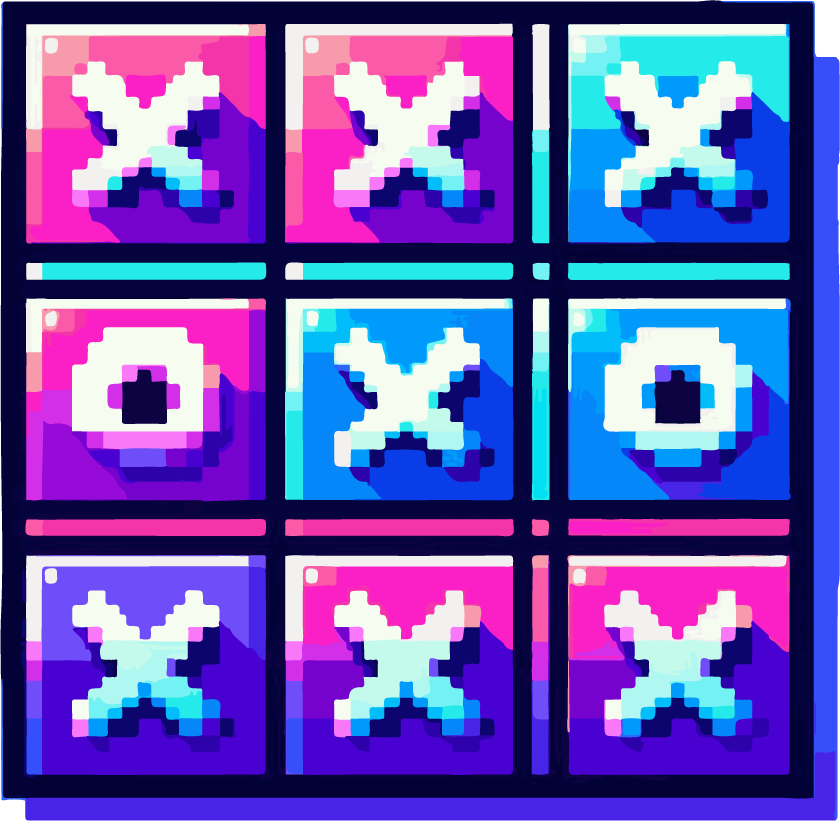

X & O Clash | Jogo da velha
Aprenda sobre sistemas distribuídos de forma prática e divertida!

Descrição do Projeto
Este projeto é um jogo da velha com foco educacional, ajudando estudantes a entender sistemas distribuídos.
Atividade principal:
Um jogo da velha, contendo os conceitos básicos de sistemas distribuídos, para fins educacionais, propondo um aprendizado sobre o tema de forma pratica, divertida e detalhada de como funciona os sistemas distribuídos.
Suporte
Documentação detalhada e exemplos disponíveis.